Une seule pièce, dix-sept mètres de baie
Le rez-de-chaussée est une pièce unique, du salon à la cuisine, ouverte sur toute sa longueur par une baie coulissante du sol au plafond. Un vantail reste ouvert : la terrasse et la pièce ne font qu'un, et le vent de mer traverse la maison.
Le sol de travertin continue dehors sans marche. La table reçoit huit personnes, l'îlot de cuisine regarde la mer, et le soir les trois suspensions au-dessus de l'îlot suffisent à éclairer toute la pièce.
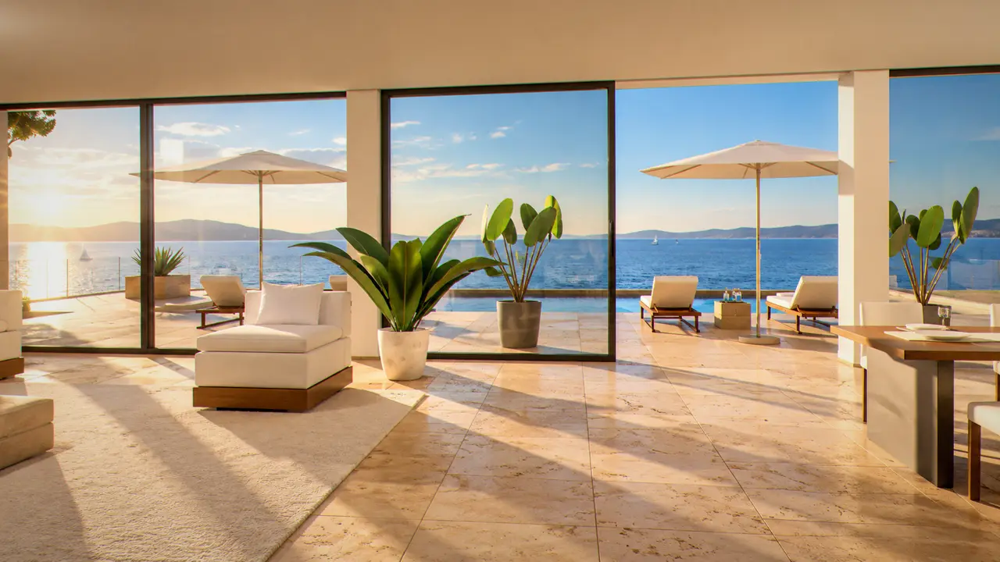
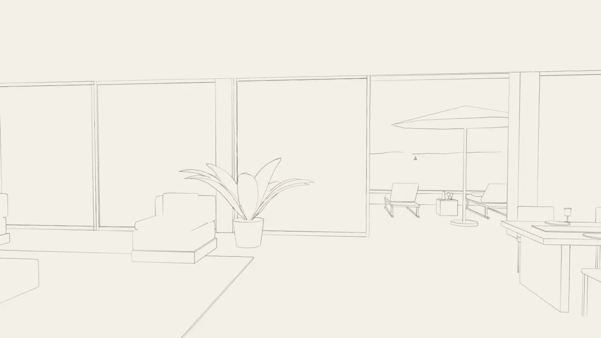
La villa, image par image. Chaque vue est dessinée avant d'être photographiée : les deux sortent de la même maquette, au pixel.
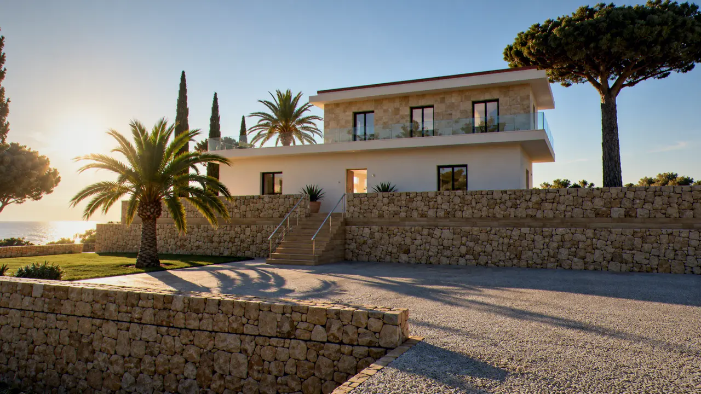
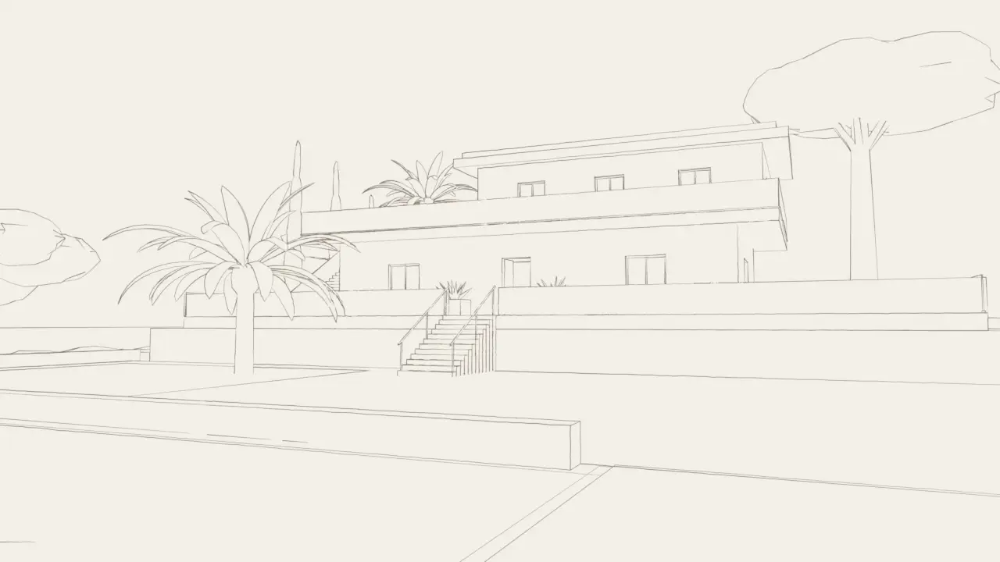


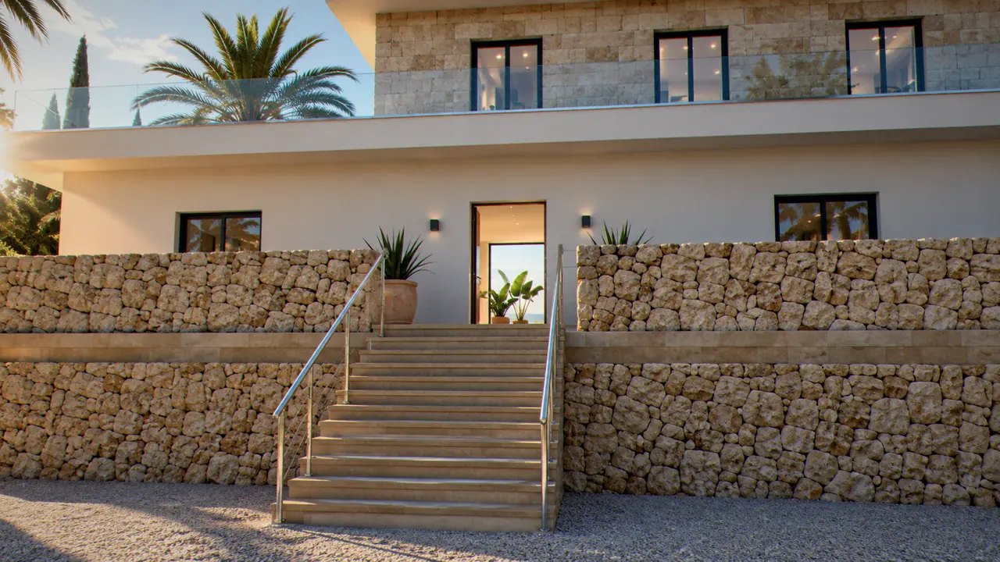
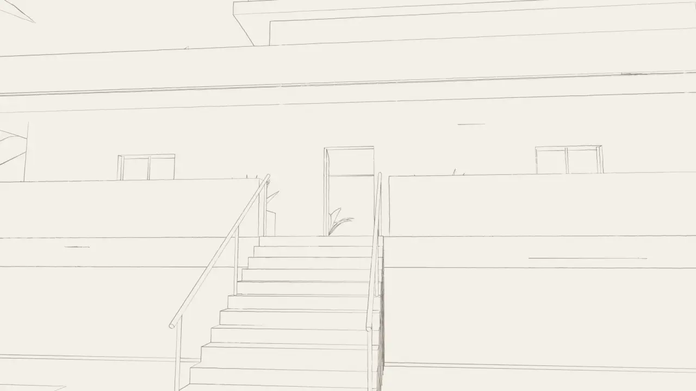


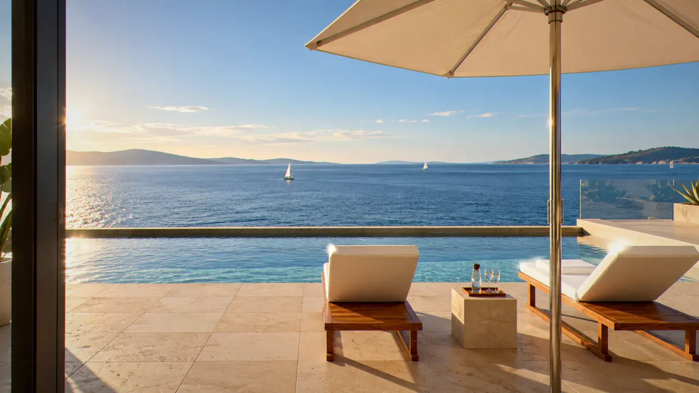
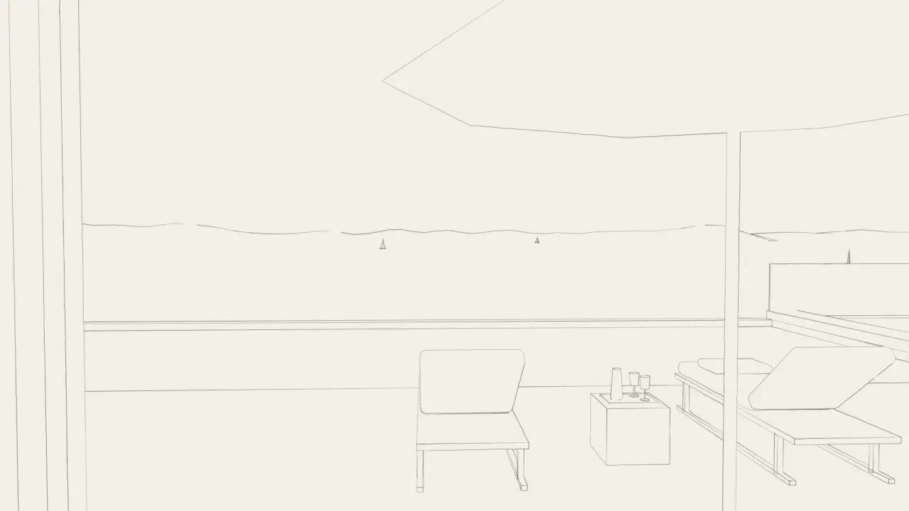


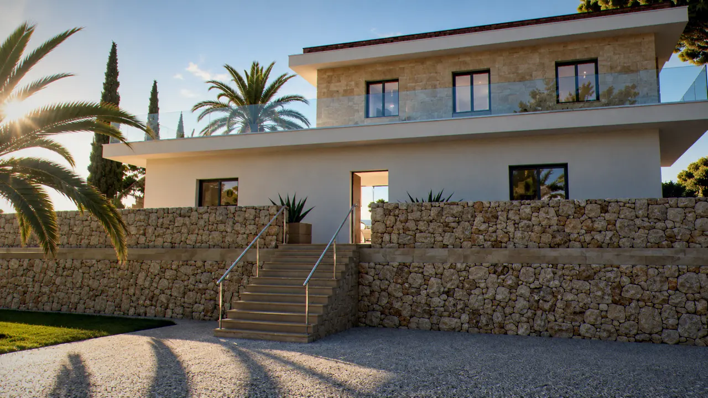
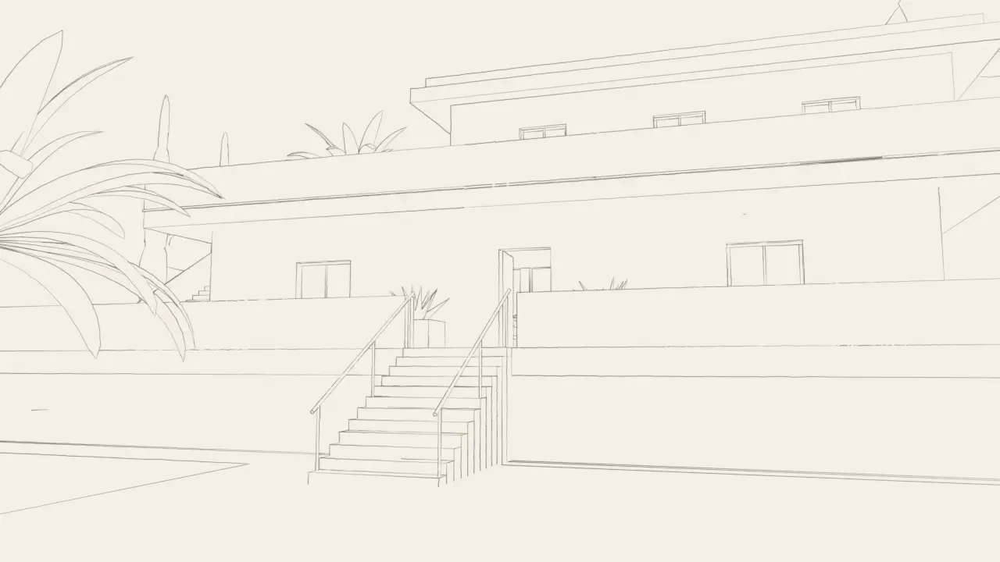
Le bassin touche l'horizon
Douze mètres de bassin à débordement, posés au bord de la dalle de roche. Depuis l'eau, la ligne du bassin se confond avec celle de la mer. Deux bains de soleil en teck, un palmier à l'angle, et la côte en face à trois kilomètres.
La terrasse fait cent quatre-vingts mètres carrés, plein sud. Le soleil s'y couche derrière le cap, et l'ombre du pin parasol avance sur les dalles en fin de journée.
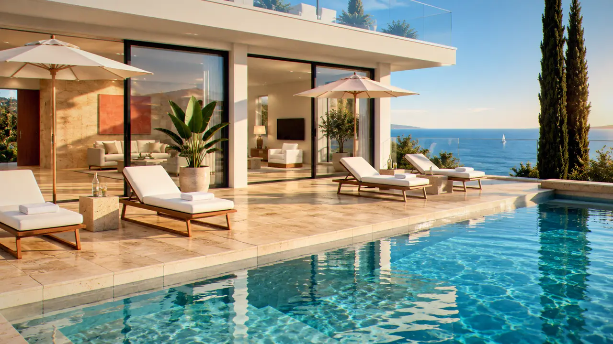
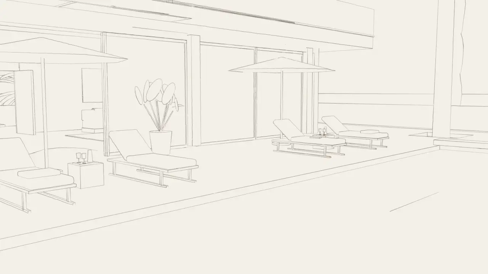
Deux chambres à l'étage, chacune sa mer
L'étage est en pierre calcaire, percé de deux portes-fenêtres, une par chambre. La chambre principale ouvre sur la mer par une porte à galandage, avec une banquette sous la fenêtre et une salle de bains en travertin. La seconde, au pignon ouest, donne sur les pins.
| Surface habitable | 320 m² |
|---|---|
| Terrasse et bassin | 180 m², bassin de 12 m |
| Chambres | 2, chacune avec sa salle de bains |
| Couchages | 4 personnes |
| Terrain | 2 hectares de garrigue et de pins |
| Exposition | Plein sud, sur la mer |
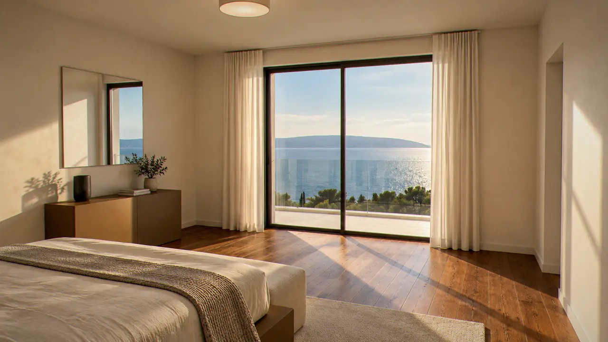
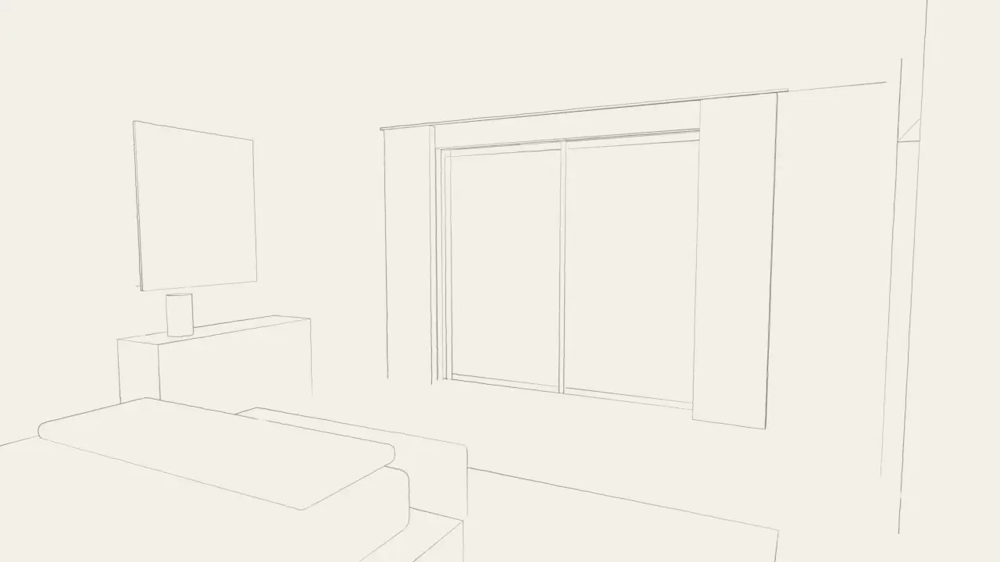
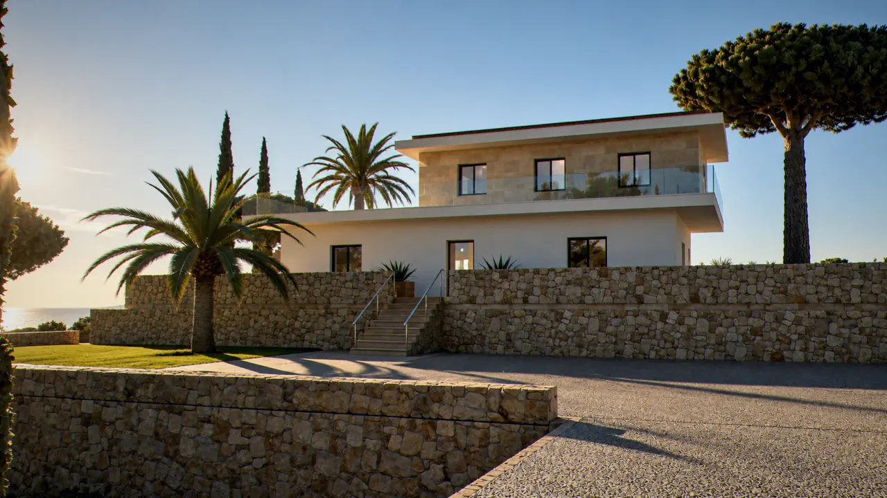
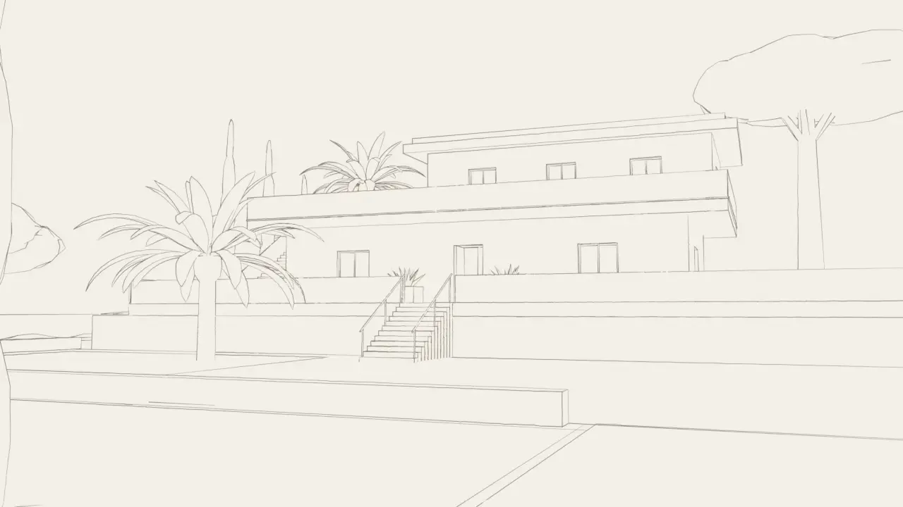
On arrive par les cyprès
Une allée droite entre deux rangs de cyprès, une cour de gravier deux mètres sous la maison, douze marches de pierre dans l'axe de la porte. La maison se découvre en montant, et la mer seulement une fois la porte passée.